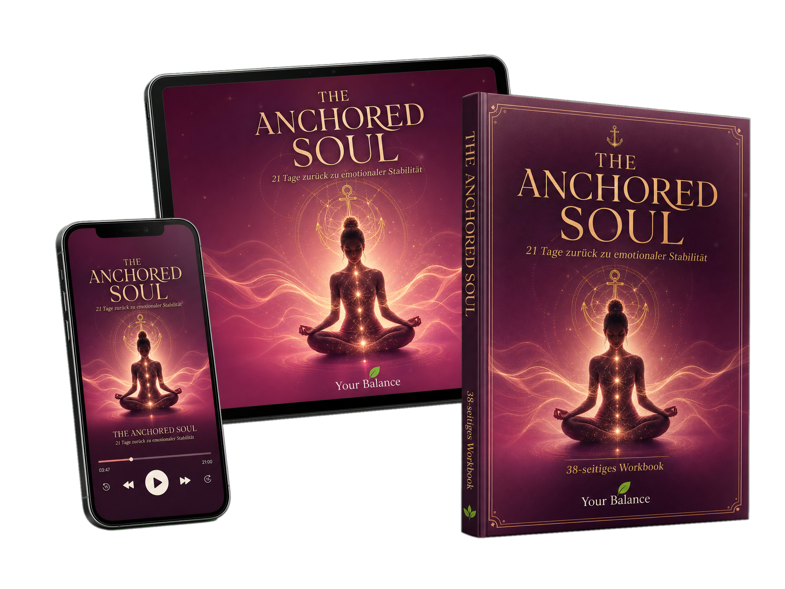

In nur 21 Tagen zurück zu emotionaler Stabilität – damit du dich nie wieder selbst in einer Verbindung verlierst.
Ein 21-tägiges Audio-Programm für feinfühlige Frauen. Nur 6–12 Minuten täglich. Sofortiger Zugang. Lebenslanger Zugriff.

Du gehst arbeiten. Du kümmerst dich um andere. Du lächelst.
Doch sobald er sich zurückzieht, fühlt es sich an, als würde dir jemand den Boden unter den Füßen wegziehen.
Du kontrollierst ständig dein Handy.
Funkstille fühlt sich körperlich schmerzhaft an.
Du analysierst jede einzelne Nachricht.
Du liegst nachts wach und kommst nicht zur Ruhe.
Du möchtest loslassen – kannst aber nicht.
Du hast Bücher, Podcasts und Coachings ausprobiert.
Und trotzdem kommst du immer wieder an denselben Punkt zurück.
Du leidest nicht, weil du ihn zu sehr liebst.
Du leidest, weil dein Nervensystem Sicherheit mit dieser Verbindung verknüpft hat.
Und genau deshalb reicht Verstehen allein nicht aus.
Ein 21-tägiges Audio-Programm für feinfühlige Frauen, die aufhören möchten, emotional von einem Mann abhängig zu sein – ohne ihre Tiefe, ihre Liebe oder ihr Herz zu verlieren.
Die Anchored Methode verbindet drei Ebenen – nicht nur im Kopf, sondern in deinem gesamten System:
Wenn Funkstille dich triggert, reagiert dein Körper schneller als dein Verstand. Du lernst, dein Nervensystem in wenigen Minuten zu beruhigen.
Das bedeutet für dich: aus Panik wird Sicherheit, aus innerem Alarm wird Ruhe.
Du denkst ständig an ihn. Du fühlst ihn. Du kommst emotional nicht frei. Hier setzen wir tiefer an – nicht, um ihn zurückzubekommen, sondern damit du deine Energie zurück zu dir holst.
Das bedeutet für dich: deine Kraft fließt wieder zu dir, statt sich an ihn zu binden.
Wahre Freiheit entsteht nicht dadurch, dass sich der andere verändert. Sondern dadurch, dass du lernst, dich selbst zu führen.
Das bedeutet für dich: Klarheit, Vertrauen und die Fähigkeit, auch in schwierigen Momenten bei dir zu bleiben.

Du schaust auf dein Handy – und dein Herz bleibt ruhig.
Du spürst die Verbindung vielleicht noch. Aber sie kontrolliert dich nicht mehr.
Du fühlst. Ohne dich zu verlieren.
Du liebst. Ohne dich aufzugeben.
Und du vertraust dir wieder.
Phase 1
Phase 2
Phase 3
„Susanne begleitet mich seit Jahren in den verschiedensten Prozessen – von Beziehungsproblemen über berufliche Themen bis hin zur Gesundheit. Sie weiß immer, welche Technik gerade am stimmigsten ist. Sie ist mein ‚Guide' in menschlicher Form."
— Jennifer D.
„Die letzte Sitzung war außergewöhnlich – sehr intensiv. Sie brachte Klarheit, und es durfte etwas gehen, was nicht mehr zu mir gehört. Susanne ist sehr einfühlsam und schafft eine wunderbare Atmosphäre."
— Karin
„Susanne hat mich in meinem aktuellen Prozess sehr gut begleitet. Ich bin sehr gestärkt und strahlend aus unserer gemeinsamen Sitzung herausgegangen."
— Andrea S.
„Immer wenn es bei mir nicht leicht läuft, ist ein Termin mit dir so unglaublich hilfreich. So wahrhaftig und echt. Im Denken und Fühlen bin ich durch dich schon so weit gekommen."
— P.
„Susanne sagte einmal zu mir: ‚Warum sich quälen, wenn es auch leicht gehen kann?' Das gemeinsame Erkunden von Blockaden bringt Klarheit und eine feine Leichtigkeit."
— Silvia
„Deine Energiearbeit berührt mich jedes Mal aufs Neue. Ich fühle mich leichter, klarer und voller Energie."
— Elfriede H.

Gründerin von Your Balance
Was meine Arbeit auszeichnet
✨ Seit 2017 Gründerin von Your Balance
✨ Über 9 Jahre Erfahrung in der Begleitung von Frauen
✨ Über 500 Frauen auf ihrem Weg begleitet
✨ Zertifiziert in ThetaHealing®
✨ Ausgebildet im Akasha Reading
✨ Ausgebildet in Bioresonanz
✨ Spezialisiert auf emotionale Abhängigkeit und Seelenverbindungen
✨ Spezialisiert auf Nervensystem-Regulation
✨ Hellfühligkeit und Hellsichtigkeit seit Kindheit
Ich begleite Frauen nicht aus einem Lehrbuch heraus. Ich bin diesen Weg selbst gegangen.
Es gab eine Zeit, in der mich eine Verbindung fast vollständig aus der Bahn geworfen hat.
Ich konnte nicht mehr schlafen. Nicht mehr richtig essen. Meine Gedanken kreisten Tag und Nacht um diesen einen Menschen.
Ich wartete. Ich hoffte. Und ich verlor mich immer mehr selbst.
Bis dieser leise Moment kam: „So kann es nicht weitergehen."
Und zum ersten Mal richtete ich meinen Blick nicht mehr auf ihn. Sondern auf mich.
Schon als Kind habe ich Menschen anders wahrgenommen. Ich war hellfühlig und hellsichtig. Ich spürte Stimmungen und Themen oft, lange bevor sie ausgesprochen wurden.
Heute weiß ich: Genau diese Fähigkeit erlaubt es mir, Frauen auf einer besonders tiefen Ebene zu begleiten. Nicht nur das zu hören, was sie sagen – sondern auch das, was zwischen den Zeilen mitschwingt.
Ich werde dir nicht sagen: „Du musst ihn einfach loslassen." Ich werde dir nicht sagen: „Denk einfach positiv." Und ich werde dir nicht erzählen, dass du nur genug manifestieren musst.
Stattdessen begleite ich dich auf dem Weg zurück zu dir.
Sanft. Ehrlich. Tiefgehend. Und in deinem Tempo.
Sofort nach deiner Anmeldung erhältst du Zugriff auf alle Inhalte.
Etwa 6–12 Minuten. Perfekt für einen vollen Alltag.
Gar nichts. Du machst einfach dort weiter, wo du aufgehört hast.
Nein. Du brauchst keinerlei Vorkenntnisse.
Dann musst du das auch nicht. Es geht darum, dich selbst nicht länger zu verlieren.
Nein. The Anchored Soul ersetzt keine psychotherapeutische Behandlung.
Lebenslang. Du kannst jederzeit zurückkehren.
Mit jedem weiteren Monat in dieser Warteschleife verlierst du ein Stück mehr von dir selbst.
Deine Energie. Deine Lebensfreude. Deine innere Sicherheit.
Und irgendwann dreht sich dein Leben nur noch um eine einzige Frage: „Warum meldet er sich nicht?"
Aber stell dir vor, in 21 Tagen ist etwas anders.
Vielleicht ist die Funkstille noch da. Vielleicht nicht. Doch das Entscheidende ist: Du wirst nicht mehr dieselbe Frau sein.
Weil du gelernt hast, dich selbst zu halten. Dich selbst zu beruhigen. Dich selbst zu wählen.
Und genau das verändert alles.
21 Tage zurück zu emotionaler Stabilität
Deine Investition
249 €
einmalig · kein Abo · keine Folgekosten
Jetzt starten und den ersten Schritt zurück zu dir machen. 💛
Das Geschenk lag nie im Außen. Es lag immer darin, zu dir selbst zurückzufinden.
Vielleicht beginnt genau heute der Moment, in dem du aufhörst, dich selbst zu verlieren. Und anfängst, dich wiederzufinden.